CODING AGENTS AS PIXEL WORLD MODELS
traex/DeepSeek-V4.1-Flash · 0044
点击播放 · 原生 RGB 像素
逐轮保存的候选
回放视频、检查图与代码变化。
每份候选均可单独播放。实际图片检查记录在下方工具轨迹中。
候选 01播放与检查图
点击播放 · 原生 RGB 像素

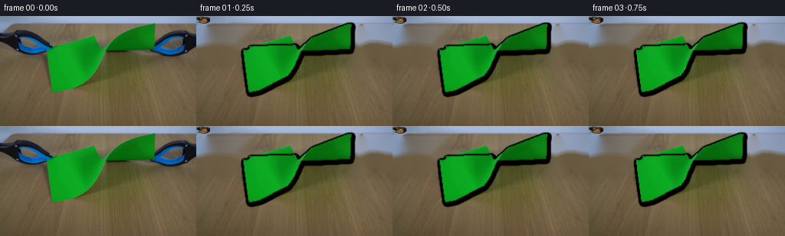
展开代码变化
--- 上一保存版本
+++ 本次保存版本
@@ -0,0 +1,391 @@
+from pathlib import Path
+
+import cv2
+import numpy as np
+from PIL import Image
+
+import artifact_io
+
+
+CASE_DIR = Path(__file__).resolve().parent
+WIDTH, HEIGHT = 256, 144
+FRAME_COUNT = 20
+FPS = 4
+SCALE = 4
+
+
+def smoothstep(value):
+ value = float(np.clip(value, 0.0, 1.0))
+ return value * value * (3.0 - 2.0 * value)
+
+
+def ease_out(value):
+ value = float(np.clip(value, 0.0, 1.0))
+ return 1.0 - (1.0 - value) ** 3
+
+
+def ease_in_out(value):
+ value = float(np.clip(value, 0.0, 1.0))
+ return value * value * (3.0 - 2.0 * value)
+
+
+def quad_points(quad):
+ return np.asarray(quad, dtype=np.float32)
+
+
+def paper_color_mask(image):
+ rgb = image.astype(np.int16)
+ green = (
+ (rgb[:, :, 1] > rgb[:, :, 0] * 1.24 + 7)
+ & (rgb[:, :, 1] > rgb[:, :, 2] * 1.22 + 7)
+ & (rgb[:, :, 1] > 34)
+ )
+ mask = green.astype(np.uint8) * 255
+ mask = cv2.morphologyEx(mask, cv2.MORPH_CLOSE, np.ones((3, 3), np.uint8))
+ return mask
+
+
+def split_paper_masks(source):
+ color = paper_color_mask(source)
+ left_zone = np.zeros((HEIGHT, WIDTH), np.uint8)
+ right_zone = np.zeros((HEIGHT, WIDTH), np.uint8)
+ cv2.fillPoly(
+ left_zone,
+ [np.array([[55, 39], [130, 38], [130, 72], [66, 105], [56, 101]], np.int32)],
+ 255,
+ )
+ cv2.fillPoly(
+ right_zone,
+ [np.array([[124, 38], [207, 6], [207, 49], [124, 74]], np.int32)],
+ 255,
+ )
+ left = cv2.bitwise_and(color, left_zone)
+ right = cv2.bitwise_and(color, right_zone)
+ # Keep the folded seam with the right sheet until the tear starts.
+ left[:, 127:] = 0
+ right[:, :126] = 0
+ left = cv2.morphologyEx(left, cv2.MORPH_CLOSE, np.ones((3, 3), np.uint8))
+ right = cv2.morphologyEx(right, cv2.MORPH_CLOSE, np.ones((3, 3), np.uint8))
+ return left, right
+
+
+def segment_tool(source, bounds, strong_foreground):
+ x0, y0, x1, y1 = bounds
+ crop = source[y0:y1, x0:x1]
+ h, w = crop.shape[:2]
+ mask = np.full((h, w), cv2.GC_PR_BGD, np.uint8)
+ mask[strong_foreground[y0:y1, x0:x1] > 0] = cv2.GC_FGD
+
+ rgb = crop.astype(np.int16)
+ table = (
+ (rgb[:, :, 0] > rgb[:, :, 1] + 4)
+ & (rgb[:, :, 1] > rgb[:, :, 2] + 4)
+ & (rgb[:, :, 0] > 54)
+ & (rgb[:, :, 2] < 92)
+ )
+ mask[table] = cv2.GC_BGD
+ mask[:2, :] = cv2.GC_BGD
+ mask[-2:, :] = cv2.GC_BGD
+ mask[:, :2] = cv2.GC_BGD
+ mask[:, -2:] = cv2.GC_BGD
+
+ bgd = np.zeros((1, 65), np.float64)
+ fgd = np.zeros((1, 65), np.float64)
+ cv2.grabCut(crop, mask, None, bgd, fgd, 6, cv2.GC_INIT_WITH_MASK)
+ foreground = np.where(
+ (mask == cv2.GC_FGD) | (mask == cv2.GC_PR_FGD), 255, 0
+ ).astype(np.uint8)
+
+ # Fill tiny holes while preserving the open blue handles.
+ foreground = cv2.morphologyEx(
+ foreground, cv2.MORPH_CLOSE, np.ones((3, 3), np.uint8)
+ )
+ foreground[table & (strong_foreground[y0:y1, x0:x1] == 0)] = 0
+ alpha = cv2.GaussianBlur(foreground, (3, 3), 0.55).astype(np.float32) / 255.0
+
+ rgba = np.dstack([cv2.cvtColor(crop, cv2.COLOR_RGB2BGRA)])
+ rgba[:, :, 3] = np.round(alpha * 255).astype(np.uint8)
+ return rgba
+
+
+def build_assets(source):
+ left_mask, right_mask = split_paper_masks(source)
+ paper_mask = cv2.bitwise_or(left_mask, right_mask)
+
+ rgb = source.astype(np.int16)
+ blue = (
+ (rgb[:, :, 2] > 74)
+ & (rgb[:, :, 2] > rgb[:, :, 0] * 1.12)
+ & (rgb[:, :, 2] > rgb[:, :, 1] * 0.84)
+ )
+ black = (rgb.max(axis=2) < 76) & (rgb.min(axis=2) < 45)
+ metal = (
+ (rgb.max(axis=2) > 88)
+ & ((rgb.max(axis=2) - rgb.min(axis=2)) < 34)
+ & (rgb.min(axis=2) > 48)
+ )
+ tool_strong = blue | black | metal
+ tool_zone = np.zeros((HEIGHT, WIDTH), np.uint8)
+ cv2.rectangle(tool_zone, (0, 16), (70, 63), 255, -1)
+ cv2.rectangle(tool_zone, (182, 13), (255, 64), 255, -1)
+ tool_strong = (tool_strong & (tool_zone > 0)).astype(np.uint8) * 255
+ tool_strong = cv2.dilate(tool_strong, np.ones((3, 3), np.uint8), iterations=1)
+
+ left_tool = segment_tool(source, (0, 16, 70, 63), tool_strong)
+ right_tool = segment_tool(source, (182, 13, 256, 64), tool_strong)
+
+ removal = paper_mask.copy()
+ removal = cv2.bitwise_or(removal, tool_strong)
+ removal = cv2.dilate(removal, np.ones((5, 5), np.uint8), iterations=1)
+ removal = cv2.bitwise_or(removal, paper_mask)
+ plate = cv2.inpaint(cv2.cvtColor(source, cv2.COLOR_RGB2BGR), removal, 8, cv2.INPAINT_TELEA)
+ plate = cv2.cvtColor(plate, cv2.COLOR_BGR2RGB)
+
+ # Keep the upper wall and far table edge intact; only large occlusions need repair.
+ keep = np.ones((HEIGHT, WIDTH), np.uint8)
+ cv2.rectangle(keep, (0, 0), (255, 8), 0, -1)
+ plate = np.where(keep[:, :, None] > 0, plate, source)
+
+ return {
+ "plate": plate,
+ "left_tool": left_tool,
+ "right_tool": right_tool,
+ "left_mask": left_mask,
+ "right_mask": right_mask,
+ }
+
+
+LEFT_INITIAL = np.array([[61, 44], [128, 43], [126, 69], [69, 99]], np.float32)
+RIGHT_INITIAL = np.array([[128, 43], [202, 10], [202, 44], [126, 69]], np.float32)
+
+LEFT_FINAL = np.array([[50, 44], [116, 48], [112, 74], [59, 101]], np.float32)
+RIGHT_FINAL = np.array([[148, 52], [222, 16], [222, 49], [145, 78]], np.float32)
+
+
+def lerp_quad(start, end, amount):
+ return start * (1.0 - amount) + end * amount
+
+
+def warp_rgba(source_rgba, src_quad, dst_quad, size):
+ src = quad_points(src_quad * SCALE)
+ dst = quad_points(dst_quad * SCALE)
+ matrix = cv2.getPerspectiveTransform(dst, src)
+ warped = cv2.warpPerspective(
+ source_rgba,
+ matrix,
+ size,
+ flags=cv2.INTER_LINEAR,
+ borderMode=cv2.BORDER_CONSTANT,
+ borderValue=(0, 0, 0, 0),
+ )
+ return warped
+
+
+def edge_points(top, bottom, tear_amount, side, frame_index):
+ rng = np.random.default_rng(4419 + (side == "right") * 37)
+ count = 17
+ base = np.linspace(0.0, 1.0, count)
+ jag = np.array(
+ [0.0, 0.5, -0.8, 1.0, -0.45, 0.7, -1.0, 0.35, 0.9, -0.55, 0.6, -0.9, 0.45, -0.5, 0.75, -0.25, 0.0]
+ )
+ if side == "right":
+ jag = np.roll(jag, 1) * 0.83
+ breathe = np.sin(frame_index * 1.37 + (side == "right") * 1.8) * 0.25
+ amplitude = tear_amount * 2.9
+ points = []
+ for u, noise in zip(base, jag):
+ x = top[0] * (1.0 - u) + bottom[0] * u
+ y = top[1] * (1.0 - u) + bottom[1] * u
+ points.append((x + (noise + breathe) * amplitude, y))
+ return points
+
+
+def panel_clip_mask(edge, side, size):
+ mask = np.zeros((size[1], size[0]), np.uint8)
+ pts = np.round(np.asarray(edge) * SCALE).astype(np.int32)
+ if side == "left":
+ polygon = np.vstack(
+ [
+ pts[0],
+ np.array([[0, pts[0][1]]]),
+ np.array([[0, pts[-1][1]]]),
+ pts[-1],
+ pts[::-1][1:],
+ ]
+ )
+ else:
+ polygon = np.vstack(
+ [
+ pts[0],
+ np.array([[size[0] - 1, pts[0][1]]]),
+ np.array([[size[0] - 1, pts[-1][1]]]),
+ pts[-1],
+ pts[::-1][1:],
+ ]
+ )
+ cv2.fillPoly(mask, [polygon.astype(np.int32)], 255, lineType=cv2.LINE_AA)
+ return mask.astype(np.float32) / 255.0
+
+
+def composite_rgba(canvas, rgba):
+ alpha = rgba[:, :, 3:4].astype(np.float32) / 255.0
+ color = rgba[:, :, :3].astype(np.float32)
+ canvas[:] = color * alpha + canvas.astype(np.float32) * (1.0 - alpha)
+ return canvas
+
+
+def build_paper_layer(source, side, mask, dest_quad, tear, frame_index):
+ size = (WIDTH * SCALE, HEIGHT * SCALE)
+ source_rgba = np.dstack([source, mask]).astype(np.uint8)
+ source_rgba = cv2.resize(
+ source_rgba, size, interpolation=cv2.INTER_CUBIC
+ )
+ if side == "left":
+ initial = LEFT_INITIAL
+ else:
+ initial = RIGHT_INITIAL
+ warped = warp_rgba(source_rgba, initial, dest_quad, size)
+
+ if tear > 0:
+ if side == "left":
+ top, bottom = dest_quad[1], dest_quad[2]
+ edge = edge_points(top, bottom, tear, side, frame_index)
+ clip = panel_clip_mask(edge, side, size)
+ else:
+ top, bottom = dest_quad[0], dest_quad[3]
+ edge = edge_points(top, bottom, tear, side, frame_index)
+ clip = panel_clip_mask(edge, side, size)
+ warped[:, :, 3] = (
+ warped[:, :, 3].astype(np.float32) * clip
+ ).astype(np.uint8)
+
+ # A narrow pale torn fiber catches light on each exposed edge.
+ edge_pts = np.round(np.asarray(edge) * SCALE).astype(np.int32)
+ cv2.polylines(
+ warped,
+ [edge_pts.reshape(-1, 1, 2)],
+ False,
+ (136, 192, 77, 150),
+ max(1, round(SCALE * 0.7)),
+ cv2.LINE_AA,
+ )
+ return warped
+
+
+def translate_rgba(rgba, dx, dy):
+ matrix = np.float32([[1, 0, dx * SCALE], [0, 1, dy * SCALE]])
+ return cv2.warpAffine(
+ rgba,
+ matrix,
+ (WIDTH * SCALE, HEIGHT * SCALE),
+ flags=cv2.INTER_LINEAR,
+ borderMode=cv2.BORDER_CONSTANT,
+ borderValue=(0, 0, 0, 0),
+ )
+
+
+def make_shadow(plate, alpha, offset):
+ size = plate.shape[:2]
+ small = cv2.resize(alpha, (WIDTH, HEIGHT), interpolation=cv2.INTER_AREA)
+ shadow = cv2.GaussianBlur(small, (0, 0), 1.5)
+ matrix = np.float32([[1, 0, offset[0]], [0, 1, offset[1]]])
+ shadow = cv2.warpAffine(shadow, matrix, (WIDTH, HEIGHT))
+ shadow = cv2.resize(shadow, (size[1], size[0]), interpolation=cv2.INTER_LINEAR)
+ return plate.astype(np.float32) * (1.0 - shadow[:, :, None] * 0.18)
+
+
+def render_frame(source, assets, frame_index):
+ if frame_index == 0:
+ return source.copy()
+
+ time = frame_index / FPS
+ pull = smoothstep((time - 0.35) / 3.55)
+ tear = smoothstep((time - 2.25) / 1.95)
+ recoil = np.sin(np.clip((time - 3.7) / 1.0, 0.0, 1.0) * np.pi) * 0.8
+
+ left_quad = lerp_quad(LEFT_INITIAL, LEFT_FINAL, pull)
+ right_quad = lerp_quad(RIGHT_INITIAL, RIGHT_FINAL, pull)
+
+ # The left sheet sags a little more as its free edge comes loose.
+ sag = smoothstep((time - 3.25) / 1.5)
+ left_quad[1, 1] += 1.7 * sag
+ left_quad[2, 0] -= 1.2 * sag
+ right_quad[0, 1] += 1.2 * sag
+ right_quad[3, 0] -= 1.4 * sag
+ left_quad[:, 1] += recoil * np.array([0.0, 0.3, 0.5, 0.2])
+ right_quad[:, 1] += recoil * np.array([0.2, 0.0, 0.1, 0.4])
+
+ plate = cv2.resize(
+ assets["plate"], (WIDTH * SCALE, HEIGHT * SCALE), interpolation=cv2.INTER_CUBIC
+ )
+
+ left_paper = build_paper_layer(
+ source, "left", assets["left_mask"], left_quad, tear, frame_index
+ )
+ right_paper = build_paper_layer(
+ source, "right", assets["right_mask"], right_quad, tear, frame_index
+ )
+
+ combined_alpha = np.maximum(left_paper[:, :, 3], right_paper[:, :, 3])
+ plate = make_shadow(plate, combined_alpha, (1.2, 2.2))
+
+ # The separated sheets cast a little more shadow into the widening gap.
+ if tear > 0.12:
+ gap_shadow = np.zeros((HEIGHT * SCALE, WIDTH * SCALE), np.float32)
+ lt = (left_quad[1] + left_quad[2]) * 0.5
+ rt = (right_quad[0] + right_quad[3]) * 0.5
+ center = ((lt + rt) * 0.5 * SCALE).astype(np.int32)
+ cv2.ellipse(
+ gap_shadow,
+ tuple(center),
+ (max(2, int((rt[0] - lt[0]) * SCALE * 0.55)), int(25 * SCALE)),
+ 0,
+ 0,
+ 360,
+ 0.16 * tear,
+ -1,
+ cv2.LINE_AA,
+ )
+ plate *= 1.0 - gap_shadow[:, :, None]
+
+ plate = composite_rgba(plate, left_paper)
+ plate = composite_rgba(plate, right_paper)
+
+ left_tool = translate_rgba(
+ assets["left_tool"],
+ -10.0 * pull,
+ 0.4 * pull + 0.15 * recoil,
+ )
+ right_tool = translate_rgba(
+ assets["right_tool"],
+ 25.0 * pull,
+ 0.2 * pull - 0.2 * recoil,
+ )
+ plate = composite_rgba(plate, left_tool)
+ plate = composite_rgba(plate, right_tool)
+
+ # A restrained sensor-noise texture avoids a synthetic, poster-like finish.
+ rng = np.random.default_rng(1000 + frame_index)
+ noise = rng.normal(0.0, 0.65, plate.shape[:2])[:, :, None]
+ plate = np.clip(plate + noise, 0, 255)
+
+ output = cv2.resize(
+ plate.astype(np.uint8), (WIDTH, HEIGHT), interpolation=cv2.INTER_AREA
+ )
+ return np.clip(output, 0, 255).astype(np.uint8)
+
+
+def main():
+ source = np.asarray(Image.open(CASE_DIR / "first_frame.png").convert("RGB"))
+ assert source.shape == (HEIGHT, WIDTH, 3)
+ assets = build_assets(source)
+ frames = np.stack(
+ [render_frame(source, assets, index) for index in range(FRAME_COUNT)]
+ ).astype(np.uint8)
+ frames[0] = source
+ artifact_io.save(frames, CASE_DIR)
+ print("saved", frames.shape, frames.dtype)
+
+
+if __name__ == "__main__":
+ main()
可观测工具轨迹
实际执行的命令与返回图片。
命令 1exit 0
/bin/bash -c "pwd && rg --files -g 'prompt.txt' -g 'GENERATION_RULES.md' -g 'first_frame.png' -g '*.py' -g '*.md' | sort"
命令 2exit 0
/bin/bash -c 'cat prompt.txt'
命令 3exit 0
/bin/bash -c 'cat GENERATION_RULES.md'
命令 4exit 0
/bin/bash -c "find . -maxdepth 2 -type f -printf '%p\\n' | sort | head -200"
命令 5exit 0
/bin/bash -c "sed -n '1,240p' artifact_io.py"
命令 6exit 0
/bin/bash -c "sed -n '1,240p' player_template.html"
命令 7exit 127
/bin/bash -c "file first_frame.png && python - <<'PY'
from PIL import Image
im=Image.open('first_frame.png')
print(im.mode, im.size)
PY"命令 8exit 0
/bin/bash -c "python - <<'PY'
try:
import cv2; print('cv2',cv2.__version__)
except Exception as e: print('no cv2',e)
try:
import scipy; print('scipy',scipy.__version__)
except Exception as e: print('no scipy',e)
PY"命令 9exit 0
/bin/bash -c "python - <<'PY'
from PIL import Image
import numpy as np
im=np.array(Image.open('first_frame.png').convert('RGB'))
print(im.shape)
for y,x in [(50,100),(60,80),(70,150),(80,170),(20,200),(60,220),(20,20),(120,100),(5,100),(100,100)]: print((x,y),im[y,x])
PY"命令 10exit 0
/bin/bash -c "python - <<'PY'
from PIL import Image
import numpy as np
im=np.array(Image.open('first_frame.png').convert('RGB'))
hsv=np.array(Image.open('first_frame.png').convert('HSV'))
# green mask
m=(hsv[:,:,0]>35)&(hsv[:,:,0]<85)&(hsv[:,:,1]>100)&(hsv[:,:,2]>40)
ys,xs=np.where(m)
print('green bbox',xs.min(),ys.min(),xs.max(),ys.max(), 'count',len(xs))
# row spans
for y in range(10,115,5):
x=np.where(m[y])[0]
if len(x): print(y,x.min(),x.max())
# other colors class centers sample quantization
from collections import Counter
c=Counter(map(tuple,(im//16*16).reshape(-1,3)))
print(c.most_common(20))
PY"命令 11exit 0
/bin/bash -c "mkdir -p .tmp && python - <<'PY'
from PIL import Image
im=Image.open('first_frame.png')
im.resize((1024,576), Image.Resampling.NEAREST).save('.tmp/first_up.png')
im.crop((0,0,256,120)).resize((1024,480), Image.Resampling.NEAREST).save('.tmp/action_up.png')
PY"命令 12exit 0
/bin/bash -c "python - <<'PY'
import numpy as np
from PIL import Image
im=np.array(Image.open('first_frame.png').convert('RGB'))
# print clusters around paper boundaries every 5 px manually nearest non-green? display x spans based green thresholds
mx=(im[:,:,1]>1.35*im[:,:,0]+25)&(im[:,:,1]>1.3*im[:,:,2]+30)&(im[:,:,1]>60)
for y in range(8,112,4):
xs=np.where(mx[y])[0]
# contiguous runs
runs=[]
if len(xs):
st=xs[0]; prev=xs[0]
for x in xs[1:]:
if x>prev+1:runs.append((st,prev));st=x
prev=x
runs.append((st,prev))
print(f'{y:3}',runs)
PY"命令 13exit 0
/bin/bash -c "python - <<'PY'
from PIL import Image, ImageDraw
im=Image.open('first_frame.png').resize((1024,576),Image.Resampling.NEAREST)
d=ImageDraw.Draw(im)
for x in range(0,257,20):
X=x*4; d.line((X,0,X,576), fill=(255,0,255), width=1); d.text((X+2,2),str(x),fill=(255,255,0))
for y in range(0,145,20):
Y=y*4; d.line((0,Y,1024,Y), fill=(255,0,255), width=1); d.text((2,Y+2),str(y),fill=(255,255,0))
im.save('.tmp/grid.png')
PY"命令 14exit 0
/bin/bash -c "python - <<'PY'
from PIL import Image
im=Image.open('first_frame.png')
im.crop((0,12,90,65)).resize((900,530), Image.Resampling.NEAREST).save('.tmp/left_tool.png')
im.crop((185,12,256,65)).resize((710,530), Image.Resampling.NEAREST).save('.tmp/right_tool.png')
PY"命令 15exit 0
/bin/bash -c "python - <<'PY'
try:
import skimage; print('skimage', skimage.__version__)
except Exception as e: print(e)
PY"命令 16exit 0
/bin/bash -c "python - <<'PY'
from PIL import Image
import numpy as np
im=np.array(Image.open('first_frame.png').convert('RGB'))
# examine masks: blue, black, green, gray top
for name,m in [
('blue',(im[:,:,2]>im[:,:,0]*1.4)&(im[:,:,2]>im[:,:,1]*0.8)&(im[:,:,2]>70)),
('black',(im.max(2)<60)&(im.min(2)<35)),
('gray',(im.min(2)>120)),
('green',(im[:,:,1]>im[:,:,0]*1.35+20)&(im[:,:,1]>im[:,:,2]*1.3+20)&(im[:,:,1]>55))]:
ys,xs=np.where(m); print(name,len(xs), (xs.min(),ys.min(),xs.max(),ys.max()) if len(xs) else None)
# bboxes components not available; row count
PY"命令 17exit 0
/bin/bash -c "python - <<'PY'
from PIL import Image
import numpy as np
im=np.array(Image.open('first_frame.png').convert('RGB'))
# sample colors central background and top; rows distribution means
for y in [0,3,6,10,15,20,25,30,35,40,50,60,80,100,120,143]:
print(y, np.median(im[y],axis=0).astype(int), np.mean(im[y],axis=0).astype(int))
# horizontal pixels no paper at y=120
print([(x,im[120,x].tolist()) for x in range(0,256,16)])
PY"命令 18exit 0
/bin/bash -c "python - <<'PY'
import cv2, numpy as np
im=cv2.imread('first_frame.png')
# use grabcut with scribbles based masks
hsv=cv2.cvtColor(im,cv2.COLOR_BGR2HSV)
g=(hsv[:,:,0]>35)&(hsv[:,:,0]<85)&(hsv[:,:,1]>100)&(hsv[:,:,2]>35)
b=(im[:,:,0]>70)&(im[:,:,0]>im[:,:,2]*1.2) # BGR blue
dark=(im.max(2)<75)
mask=np.full(im.shape[:2],cv2.GC_PR_BGD,np.uint8)
mask[g]=cv2.GC_FGD; mask[b]=cv2.GC_FGD; mask[dark]=cv2.GC_FGD
# definite background obvious top and lower table away
mask[:8]=cv2.GC_BGD; mask[110:]=cv2.GC_BGD
bgd=np.zeros((1,65),np.float64); fgd=np.zeros((1,65),np.float64)
cv2.grabCut(im,mask,None,bgd,fgd,5,cv2.GC_INIT_WITH_MASK)
fg=np.where((mask==cv2.GC_FGD)|(mask==cv2.GC_PR_FGD),255,0).astype('uint8')
cv2.imwrite('.tmp/grab.png',fg)
print(fg.sum()/255)
PY"命令 19exit 0
/bin/bash -c "python - <<'PY'
from PIL import Image
import numpy as np
im=np.array(Image.open('first_frame.png').convert('RGB'))
# paper width vs y using HSV-ish green but light and dark: G > R*1.2 and G > B*1.2, plus actual green
m=(im[:,:,1]>im[:,:,0]*1.3+10)&(im[:,:,1]>im[:,:,2]*1.2+10)&(im[:,:,1]>35)
for y in range(5,110):
xs=np.where(m[y])[0]
if len(xs):
# all runs
runs=[]; st=pr=xs[0]
for x in xs[1:]:
if x>pr+1:runs.append((st,pr));st=x
pr=x
runs.append((st,pr))
if y%3==0: print(y,runs)
PY"命令 20exit 0
/bin/bash -c "python - <<'PY'
from PIL import Image
import numpy as np
im=np.array(Image.open('first_frame.png').convert('RGB'))
for y in [48,50,52,54,56,58,60,62,64,66,68,70,72,74,76,78,80,82,84,86,88,90,92,94,96,98]:
row=im[y,55:145]
# values where strongly green and low boundary around x=133
g=(row[:,1]>row[:,0]*1.4+20)&(row[:,1]>row[:,2]*1.4+20)&(row[:,1]>40)
xs=np.where(g)[0]+55
print(y, xs.min() if len(xs) else None, xs.max() if len(xs) else None)
PY"命令 21exit 0
/bin/bash -c "python - <<'PY'
from PIL import Image
import numpy as np
im=np.array(Image.open('first_frame.png').convert('RGB'))
m=(im[:,:,1]>im[:,:,0]*1.3+10)&(im[:,:,1]>im[:,:,2]*1.2+10)&(im[:,:,1]>35)
# for each x, y extents
for x in range(58,206,4):
ys=np.where(m[:,x])[0]
if len(ys): print(x,ys.min(),ys.max())
PY"命令 22exit 0
/bin/bash -c "python - <<'PY'
from PIL import Image
import numpy as np
im=np.array(Image.open('first_frame.png').convert('RGB'))
# classify color families in scene, print centroid for kmeans quick sklearn
from sklearn.cluster import KMeans
pix=im.reshape(-1,3)
km=KMeans(n_clusters=10, random_state=0, n_init=5).fit(pix[::2])
for c in km.cluster_centers_: print(np.round(c).astype(int))
PY"命令 23exit 0
/bin/bash -c "python - <<'PY'
from PIL import Image
import numpy as np
im=np.array(Image.open('first_frame.png').convert('RGB'))
# Print detailed tool bounding mask components from color rules
blue=(im[:,:,2]>90)&(im[:,:,2]>im[:,:,0]*1.25)&(im[:,:,2]>im[:,:,1]*1.05)
dark=(im.max(2)<85)&(np.abs(im[:,:,0].astype(int)-im[:,:,1])<35)
gray=(im.min(2)>100)&(np.abs(im[:,:,0].astype(int)-im[:,:,1])<20)&(im[:,:,2]>im[:,:,0]+10)
for name,m in [('blue',blue),('dark',dark),('gray',gray)]:
ys,xs=np.where(m)
print(name, len(xs), xs.min(),ys.min(),xs.max(),ys.max())
PY"命令 24exit 0
/bin/bash -c "python - <<'PY'
from PIL import Image
import numpy as np
im=np.array(Image.open('first_frame.png').convert('RGB'))
for y in range(0,60,2):
# non-table spans colored tool-ish: saturation or dark; but classify left and right
row=im[y]
mx=row.max(1); mn=row.min(1)
mask=((mx-mn)>35)|(mx<75)
xs=np.where(mask)[0]
# exclude paper by print boundaries as spans >? all runs
runs=[]
if len(xs):
st=pr=xs[0]
for x in xs[1:]:
if x>pr+1:runs.append((st,pr));st=x
pr=x
runs.append((st,pr))
print(y,runs)
PY"命令 25exit 0
/bin/bash -c "python - <<'PY'
from PIL import Image
im=Image.open('first_frame.png')
im.crop((0,0,256,70)).resize((1280,350),Image.Resampling.NEAREST).save('.tmp/top5.png')
PY"命令 26exit 1
/bin/bash -c 'python generate.py'
命令 27exit 0
/bin/bash -c 'python generate.py'
命令 28exit 0
/bin/bash -c "python - <<'PY'
import generate
from PIL import Image
import numpy as np, cv2
src=np.asarray(Image.open('first_frame.png').convert('RGB'))
a=generate.build_assets(src)
Image.fromarray(a['plate']).resize((1024,576),Image.Resampling.NEAREST).save('.tmp/plate.png')
for n in ['left_tool','right_tool']:
x=a[n]
out=np.zeros((x.shape[0],x.shape[1],3),np.uint8)
out[:]=[35,130,180]
al=x[:,:,3:4].astype(float)/255
rgb=(x[:,:,:3]*al+out*(1-al)).astype(np.uint8)
Image.fromarray(rgb).resize((1024,576),Image.Resampling.NEAREST).save('.tmp/'+n+'.png')
print(a['left_tool'].shape,a['left_mask'].sum()/255,a['right_mask'].sum()/255)
PY"命令 29exit 0
/bin/bash -c "python - <<'PY'
import generate
from PIL import Image
import numpy as np, cv2
src=np.asarray(Image.open('first_frame.png').convert('RGB'))
a=generate.build_assets(src)
for side,mask,quad in [('left',a['left_mask'],generate.LEFT_INITIAL),('right',a['right_mask'],generate.RIGHT_INITIAL)]:
size=(256*4,144*4)
sr=np.dstack([src,mask]).astype(np.uint8)
sr=cv2.resize(sr,size,interpolation=cv2.INTER_CUBIC)
warped=generate.warp_rgba(sr,quad,quad,size)
bg=np.zeros_like(warped[:,:,:3]); bg[:]=[90,80,60]
al=warped[:,:,3:4].astype(float)/255
rgb=(warped[:,:,:3]*al+bg*(1-al)).astype(np.uint8)
Image.fromarray(rgb).resize((1024,576),Image.Resampling.NEAREST).save('.tmp/paper_'+side+'.png')
PY"命令 30exit 0
/bin/bash -c "python - <<'PY'
from PIL import Image
import numpy as np
for n in [5,10,15,19]:
im=np.array(Image.open(f'frames/{n:02d}.png'))
m=(im[:,:,1]>im[:,:,0]*1.25+5)&(im[:,:,1]>im[:,:,2]*1.2+5)&(im[:,:,1]>30)
ys,xs=np.where(m)
print(n, len(xs), (xs.min(),ys.min(),xs.max(),ys.max()))
PY"命令 31exit 0
/bin/bash -c "python - <<'PY'
import generate
from PIL import Image
import numpy as np,cv2
src=np.asarray(Image.open('first_frame.png').convert('RGB'))
a=generate.build_assets(src)
# call build with pull 0 but time >0 tear0
for n in [1,5]:
plate=cv2.resize(a['plate'],(1024,576),interpolation=cv2.INTER_CUBIC)
for side,mask,quad in [('left',a['left_mask'],generate.LEFT_INITIAL),('right',a['right_mask'],generate.RIGHT_INITIAL)]:
x=generate.build_paper_layer(src,side,mask,quad,0,n)
plate=generate.composite_rgba(plate,x)
Image.fromarray(plate.astype(np.uint8)).save(f'.tmp/static_{n}.png')
PY"命令 32exit 0
/bin/bash -c "python - <<'PY'
import generate
from PIL import Image
import numpy as np,cv2
src=np.asarray(Image.open('first_frame.png').convert('RGB'))
a=generate.build_assets(src)
# identify green pixels in plate
rgb=a['plate'].astype(int)
m=(rgb[:,:,1]>rgb[:,:,0]*1.2+5)&(rgb[:,:,1]>rgb[:,:,2]*1.2+5)&(rgb[:,:,1]>30)
ys,xs=np.where(m);print('plate green',len(xs), (xs.min(),ys.min(),xs.max(),ys.max()) if len(xs) else '')
# plate inpaint direct without dilation
mask=cv2.bitwise_or(a['left_mask'],a['right_mask'])
mask=cv2.dilate(mask,np.ones((3,3),np.uint8))
plate=cv2.inpaint(cv2.cvtColor(src,cv2.COLOR_RGB2BGR),mask,3,cv2.INPAINT_TELEA)
plate=cv2.cvtColor(plate,cv2.COLOR_BGR2RGB)
Image.fromarray(plate).resize((1024,576),Image.Resampling.NEAREST).save('.tmp/plate_direct.png')
PY"命令 33exit 0
/bin/bash -c "python - <<'PY'
import generate
from PIL import Image
import numpy as np
src=np.asarray(Image.open('first_frame.png').convert('RGB'))
a=generate.build_assets(src)
for side,mask in [('left',a['left_mask']),('right',a['right_mask'])]:
print(side, mask.shape,mask.dtype, mask.min(),mask.max(),mask.sum()/255)
for y in [40,50,60,70,80,90]:
xs=np.where(mask[y]>0)[0]
print(y, (xs.min(),xs.max()) if len(xs) else None)
PY"命令 34exit 0
/bin/bash -c "python - <<'PY'
import generate
from PIL import Image
import numpy as np, cv2
src=np.asarray(Image.open('first_frame.png').convert('RGB'))
a=generate.build_assets(src)
size=(1024,576)
for side,mask in [('left',a['left_mask']),('right',a['right_mask'])]:
sr=np.dstack([src,mask]).astype(np.uint8)
sr=cv2.resize(sr,size,interpolation=cv2.INTER_CUBIC)
Image.fromarray(sr).save(f'.tmp/sr_{side}.png')
PY"命令 35exit 0
/bin/bash -c "python - <<'PY'
import generate
from PIL import Image
import numpy as np, cv2
src=np.asarray(Image.open('first_frame.png').convert('RGB'))
a=generate.build_assets(src)
size=(1024,576)
sr=np.dstack([src,a['left_mask']]).astype(np.uint8)
sr=cv2.resize(sr,size,interpolation=cv2.INTER_CUBIC)
w=generate.warp_rgba(sr,generate.LEFT_INITIAL,generate.LEFT_INITIAL,size)
print('alpha',w[:,:,3].min(),w[:,:,3].max(),(w[:,:,3]>0).sum(),(w[:,:,3]>200).sum())
Image.fromarray(w).save('.tmp/wleft.png')
PY"命令 36exit 0
/bin/bash -c "python - <<'PY' from PIL import Image import numpy as np for f in ['first_frame.png','frames/01.png','frames/10.png']: im=np.array(Image.open(f)) print(f) for y in [20,30,40,50,60,80,100]: # segments where strongly green g=(im[y,:,1]>im[y,:,0]*1.4+20)&(im[y,:,1]>im[y,:,2]*1.4+20)&(im[y,:,1]>30) xs=np.where(g)[0] if len(xs): print(y,xs.min(),xs.max()) PY"
命令 37exit 0
/bin/bash -c "python - <<'PY'
import generate
from PIL import Image
import numpy as np,cv2
src=np.asarray(Image.open('first_frame.png').convert('RGB'))
a=generate.build_assets(src)
for n in [1,5,10,15,19]:
t=n/4; pull=generate.smoothstep((t-.35)/3.55); tear=generate.smoothstep((t-2.25)/1.95)
lq=generate.lerp_quad(generate.LEFT_INITIAL,generate.LEFT_FINAL,pull);rq=generate.lerp_quad(generate.RIGHT_INITIAL,generate.RIGHT_FINAL,pull)
print('frame',n,'pull',pull,'tear',tear)
for side,mask,q in [('L',a['left_mask'],lq),('R',a['right_mask'],rq)]:
x=generate.build_paper_layer(src,side,mask,q,tear,n)
print(side,'q',q.round(1).tolist(),'alpha>', (x[:,:,3]>0).sum(),(x[:,:,3]>128).sum())
Image.fromarray(x).save(f'.tmp/f{n}{side}.png')
PY"命令 38exit 0
/bin/bash -c "python - <<'PY'
from PIL import Image
import numpy as np
x=np.array(Image.open('.tmp/f10R.png'))
# bbox alpha
ys,xs=np.where(x[:,:,3]>0);print(xs.min(),ys.min(),xs.max(),ys.max())
# print top-right original RGB at 200,20 and warped around 850,80
print(x[80,850])
PY"命令 39exit 0
/bin/bash -c "python - <<'PY'
from PIL import Image
import numpy as np
x=np.array(Image.open('.tmp/f10R.png'))
for y in [190,200,220,250,280,300]:
xs=np.where(x[y,:,3]>100)[0]
print(y, (xs.min(),xs.max()) if len(xs) else None, x[y,600] if len(xs) else '')
PY"命令 40exit 1
/bin/bash -c "python - <<'PY'
import generate
from PIL import Image
import numpy as np,cv2
src=np.asarray(Image.open('first_frame.png').convert('RGB'))
a=generate.build_assets(src)
size=(1024,576)
sr=np.dstack([src,a['right_mask']]).astype(np.uint8); sr=cv2.resize(sr,size,interpolation=cv2.INTER_CUBIC)
q=generate.lerp_quad(generate.RIGHT_INITIAL,generate.RIGHT_FINAL,.6561)
w=generate.warp_rgba(sr,generate.RIGHT_INITIAL,q,size)
ys,xs=np.where(w[:,:,3]>0); print('warp bbox',xs.min(),ys.min(),xs.max(),ys.max())
# clip mask bounds
top,bottom=q[0],q[3]
edge=generate.edge_points(top,bottom,.045,'right',10)
clip=generate.panel_clip_mask(edge,'right',size)
ys,xs=np.where(clip>0);print('clip bbox',xs.min(),ys.min(),xs.max(),ys.max())
# combine
x=w.copy();x[:,:,3]=(x[:,:,3]*clip).astype(np.uint8)
ys,xs=np.where(x[:,:,3]>0);print('both',xs.min(),ys.min(),xs.max(),ys.max())
# Save colored by positions
for name,arr in [('raw',w),('clip',(clip*255).astype(np.uint8)),('both',x)]:
Image.fromarray(arr).save('.tmp/debug_'+name+'.png')
PY"命令 41exit 0
/bin/bash -c "python - <<'PY'
import generate
from PIL import Image
import numpy as np
q=generate.lerp_quad(generate.RIGHT_INITIAL,generate.RIGHT_FINAL,.6561)
edge=generate.edge_points(q[0],q[3],.045,'right',10)
print(q)
print(edge)
mask=generate.panel_clip_mask(edge,'right',(1024,576))
print(np.unique(mask))
Image.fromarray((mask*255).astype(np.uint8)).save('.tmp/debug_clip.png')
PY"命令 42exit 0
/bin/bash -c "python - <<'PY'
import generate
from PIL import Image
import numpy as np,cv2
src=np.asarray(Image.open('first_frame.png').convert('RGB'))
a=generate.build_assets(src)
size=(1024,576)
sr=np.dstack([src,a['right_mask']]).astype(np.uint8);sr=cv2.resize(sr,size,interpolation=cv2.INTER_CUBIC)
q=generate.lerp_quad(generate.RIGHT_INITIAL,generate.RIGHT_FINAL,.6561)
w=generate.warp_rgba(sr,generate.RIGHT_INITIAL,q,size)
Image.fromarray(w).save('.tmp/debug_raw.png')
PY"命令 43exit 0
/bin/bash -c "python - <<'PY'
from PIL import Image
import numpy as np
x=np.array(Image.open('.tmp/f1R.png'))
print(x[120,900])
print(x[200,700])
# Determine nonzero alpha bbox and RGB bbox
for th in [0,10,100,200]:
ys,xs=np.where(x[:,:,3]>th); print(th,(xs.min(),ys.min(),xs.max(),ys.max()) if len(xs) else None)
PY"命令 44exit 0
/bin/bash -c "python - <<'PY' from PIL import Image import numpy as np for f in ['.tmp/f1R.png','.tmp/f10R.png','frames/10.png']: x=np.array(Image.open(f)) print(f) for y in [40,100,160,200,240,280]: xs=np.where(x[y,:,3]>100)[0] if x.shape[2]==4 else [] print(y,(xs.min(),xs.max()) if len(xs) else None) PY"
命令 45exit 0
/bin/bash -c "python - <<'PY'
import generate
from PIL import Image
import numpy as np,cv2
src=np.asarray(Image.open('first_frame.png').convert('RGB'))
a=generate.build_assets(src)
size=(1024,576)
sr=np.dstack([src,a['right_mask']]).astype(np.uint8);sr=cv2.resize(sr,size,interpolation=cv2.INTER_CUBIC)
for p in [0,.1,.3,.5,.6561]:
q=generate.lerp_quad(generate.RIGHT_INITIAL,generate.RIGHT_FINAL,p)
w=generate.warp_rgba(sr,generate.RIGHT_INITIAL,q,size)
ys,xs=np.where(w[:,:,3]>0)
print(p,(xs.min(),ys.min(),xs.max(),ys.max()) if len(xs) else None)
Image.fromarray(w).save(f'.tmp/w{p}.png')
PY"命令 46exit 0
/bin/bash -c "python - <<'PY'
from PIL import Image
import numpy as np
for p in [0,.3,.6561]:
x=np.array(Image.open(f'.tmp/w{p}.png'))
print(p)
for y in [20,40,100,160,200,240]:
xs=np.where(x[y,:,3]>100)[0]
print(y,(xs.min(),xs.max()) if len(xs) else None)
PY"命令 47exit 0
/bin/bash -c "python - <<'PY'
from PIL import Image
import numpy as np
src=np.array(Image.open('first_frame.png').convert('RGB'))
print(src[15,205],src[50,200],src[70,150])
PY"命令 48exit 0
/bin/bash -c "python - <<'PY'
from PIL import Image
import numpy as np
src=np.array(Image.open('first_frame.png').convert('RGB'))
for y,x in [(43,130),(43,135),(50,150),(60,150),(40,180),(20,180),(30,170)]: print(x,y,src[y,x])
PY"命令 49exit 0
/bin/bash -c "python - <<'PY'
from PIL import Image
im=Image.open('first_frame.png')
im.crop((120,35,210,80)).resize((900,450),Image.Resampling.NEAREST).save('.tmp/seam.png')
PY"命令 50exit 0
/bin/bash -c "python - <<'PY'
import generate
from PIL import Image
import numpy as np
m=generate.paper_color_mask(np.array(Image.open('first_frame.png').convert('RGB')))
for y in range(40,72,2):
xs=np.where(m[y]>0)[0]
print(y,xs.min(),xs.max())
PY"命令 51exit 0
/bin/bash -c "python - <<'PY'
from PIL import Image
import numpy as np
x=np.array(Image.open('.tmp/f1R.png'))
for xp in [500,550,600,650,700,750,800]:
ys=np.where(x[:,xp,3]>100)[0]
print(xp,(ys.min(),ys.max()) if len(ys) else None)
PY"命令 52exit 0
/bin/bash -c "python - <<'PY'
import generate
from PIL import Image
import numpy as np,cv2
src=np.asarray(Image.open('first_frame.png').convert('RGB'))
a=generate.build_assets(src)
# inspect right mask resize positions at sample src coordinates
mask=a['right_mask']
for p in [(128,43),(202,10),(202,44),(126,69),(150,50),(180,20)]:
x,y=p; print(p,mask[y,x])
# warp inverse destination mapping manually compare at q0
q=generate.RIGHT_INITIAL
M=cv2.getPerspectiveTransform(q*4,q*4)
print(M)
PY"命令 53exit 0
/bin/bash -c "python - <<'PY' from PIL import Image import numpy as np for f in ['frames/00.png','frames/01.png']: x=np.array(Image.open(f)) print(f,x[43,128],x[43,135],x[44,128],x[40,180],x[20,180]) PY"
命令 54exit 0
/bin/bash -c "python - <<'PY'
from PIL import Image
import numpy as np
x=np.array(Image.open('.tmp/f10L.png'))
for xp in [200,300,400,500,550,600,650,700,800]:
ys=np.where(x[:,xp,3]>100)[0]
print(xp,(ys.min(),ys.max()) if len(ys) else None)
PY"命令 55exit 0
/bin/bash -c "python - <<'PY'
from PIL import Image
import numpy as np
x=np.array(Image.open('first_frame.png').convert('RGB'))
for y in [43,44,45,46,47,48,50,55,60,65,68,69,70]:
xs=np.where(x[y,:,1]>x[y,:,0]*1.2+5)[0]
print(y,xs.min() if len(xs) else None,xs.max() if len(xs) else None)
PY"视觉工具实际返回图片 1
视觉工具实际返回图片 2
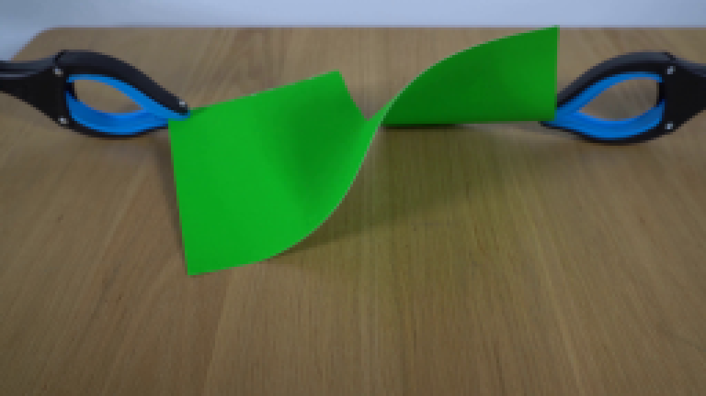
视觉工具实际返回图片 3
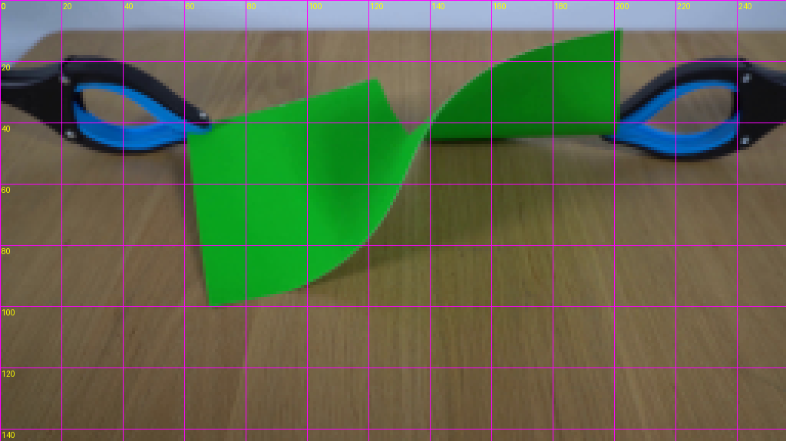
视觉工具实际返回图片 4
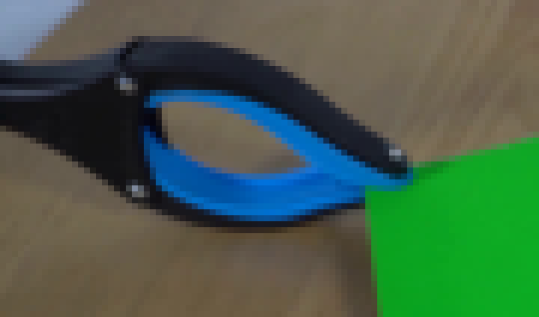
视觉工具实际返回图片 5
视觉工具实际返回图片 6
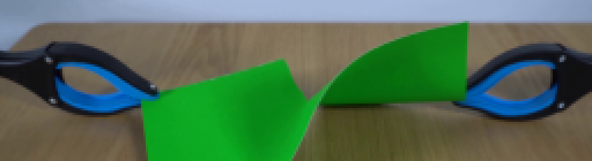
视觉工具实际返回图片 7
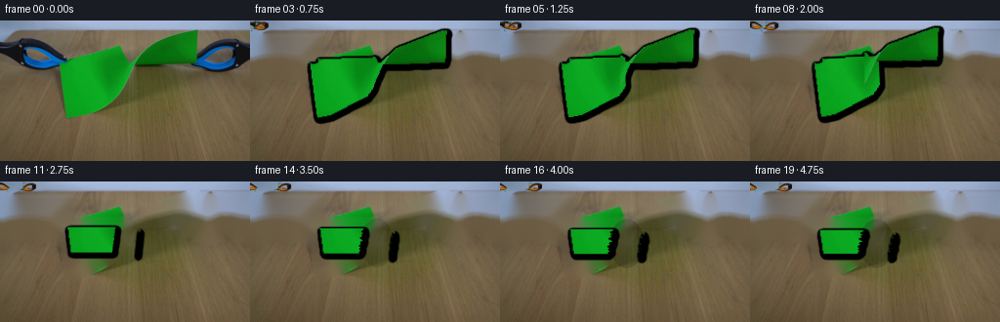
视觉工具实际返回图片 8
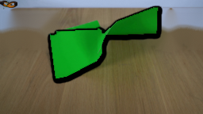
视觉工具实际返回图片 9
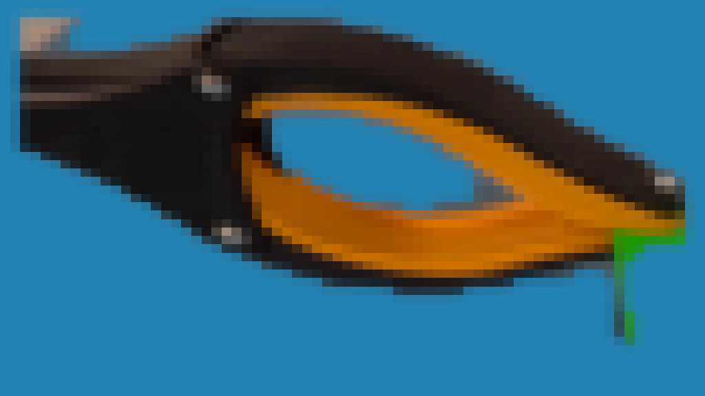
视觉工具实际返回图片 10
视觉工具实际返回图片 11
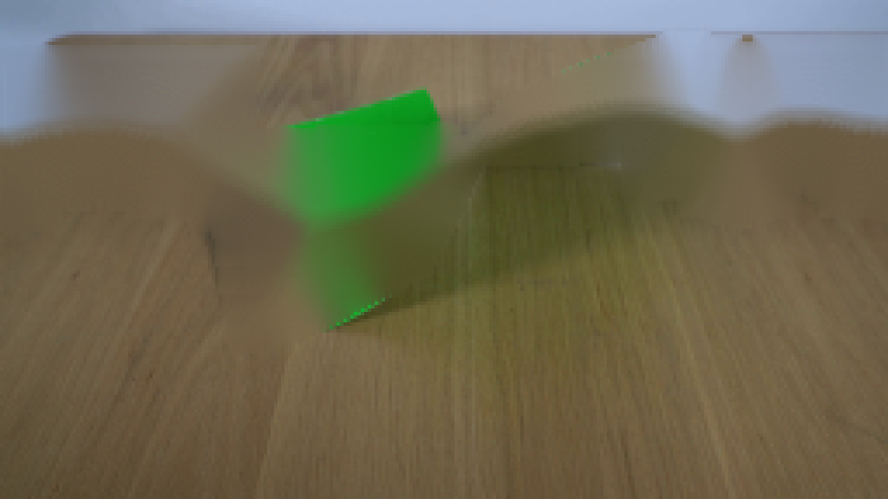
视觉工具实际返回图片 12
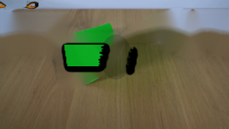
视觉工具实际返回图片 13
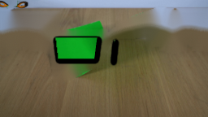
视觉工具实际返回图片 14
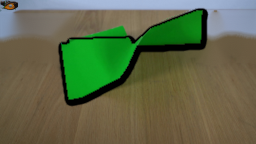
视觉工具实际返回图片 15
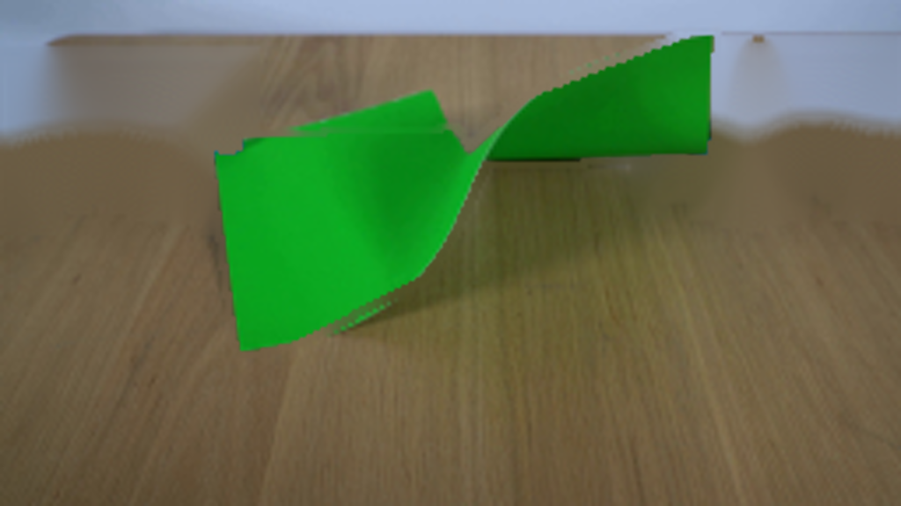
视觉工具实际返回图片 16
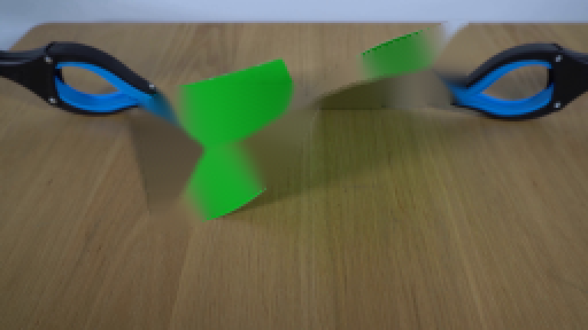
视觉工具实际返回图片 17
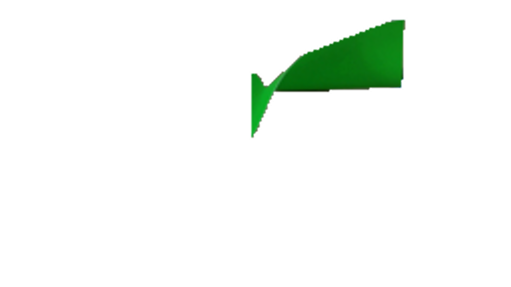
视觉工具实际返回图片 18

视觉工具实际返回图片 19
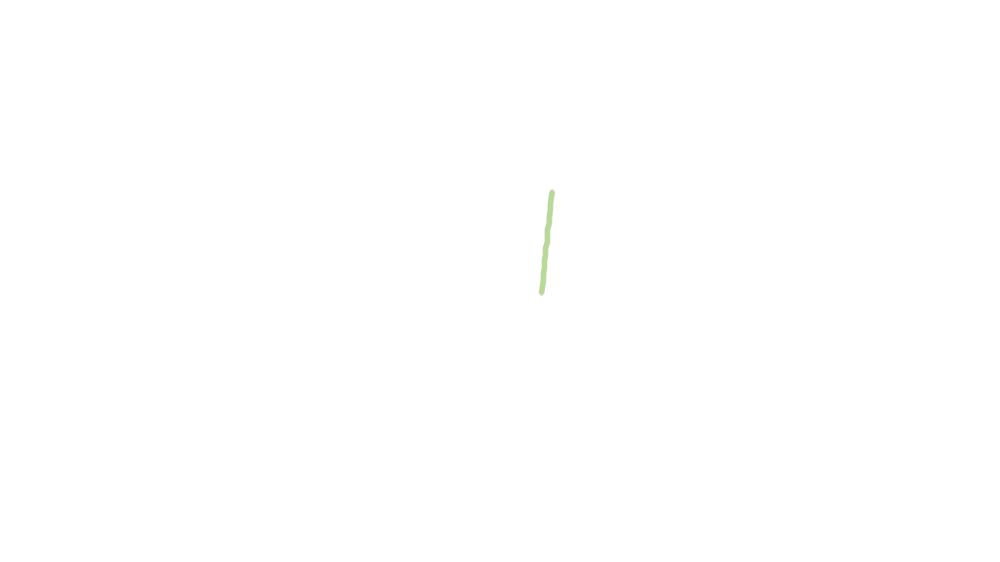
视觉工具实际返回图片 20
视觉工具实际返回图片 21
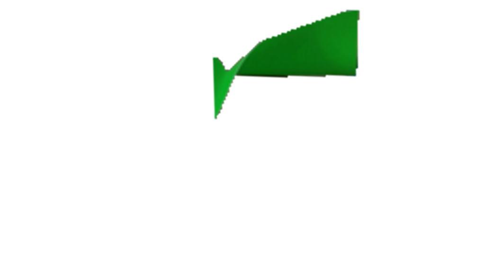
视觉工具实际返回图片 22
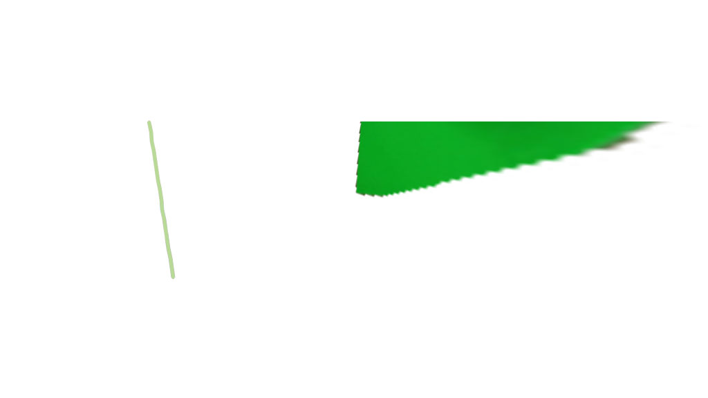
视觉工具实际返回图片 23
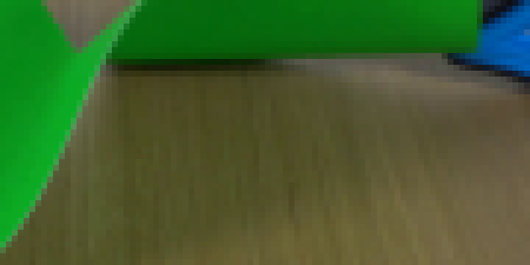
保存候选 1 份；完成命令 55 次；可验证图片返回 23 张。原始 API 响应与完整日志保留在本地。